Copyright © 2022 by "Dev Vaibhav" · All Rights reserved · E-Mail: vaibhav.dev5@gmail.com
Motivation: Class Assignment
Objective: Setup RTK GNSS base and receiver and test them in different environment conditions
Details: We were a team of four who contributed to making this project under the guidance of our professor/ TAs.
Tools and Resources:
- 2 x U-Blox ZED c009-f9p RTK GPS board with telemetry radios
Testing was done under four environment conditions
- Static with clear sky
- Static with partial occlusion and reflection
- Moving with clear sky
- Moving with partial occlusion and reflection
GPS Quality Indicator (Q) was observed in all four conditions and efforts were made to understand the readings and to calculate the error.
1. STATIC DATA (CLEAR AREA) @ Centennial Common


DEV VAIBHAV
Aspiring Roboticist
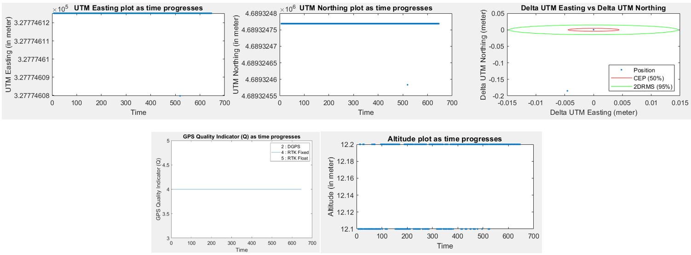
The static readings were taken at Centennial Common on a day with clear sky conditions. RTK Fixed (Q = 4) was obtained for 100 % of the time. As can be seen from the data, utmE and utmN plots are very stable with just one data point lying outside from the rest. Centimetre level accuracy is achieved overall (4.5 mm in utmE, 18.47 cm in utmN and 6.67 cm in altitude). CEP and 2DRMS values are 4.42 mm and 1.46 cm respectively which show that the data is very concentrated and hence meets the expectation.
2. MOVING DATA (CLEAR AREA) @ Centennial Common
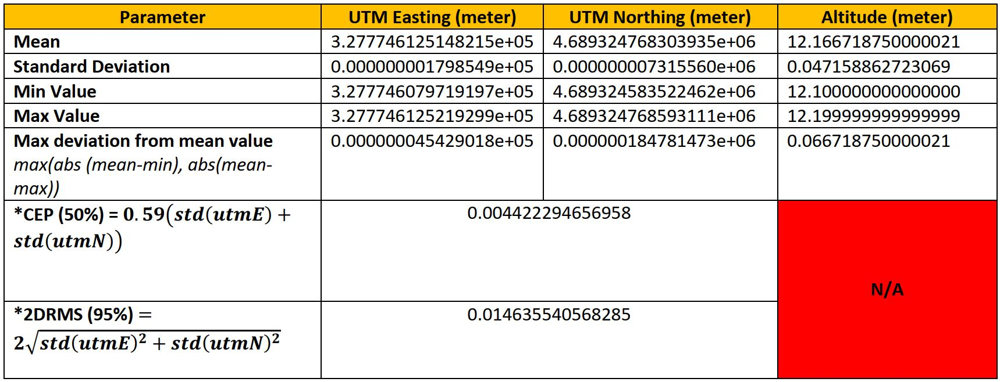
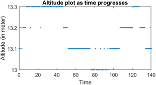
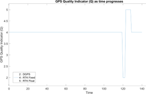
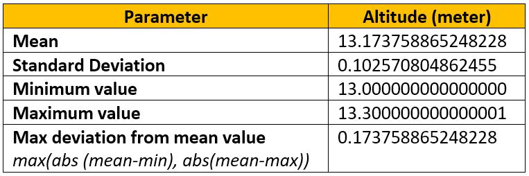
Moving data was taken at Centennial Common in the evening with clear sky conditions. RTK Fixed/ Float (Q = 4/ 5) was obtained for 97% of the time. Movement was done in a rectangle. Approximated curve is plotted below using MATLAB by breaking data into four segments (top, right, bottom and left). A maximum deviation of 17.37 cm from the mean altitude value is observed which can be attributed to the fact that the ground is not planar as well as change in Q value. Centimetre level accuracy is obtained in altitude which is as per expectation.
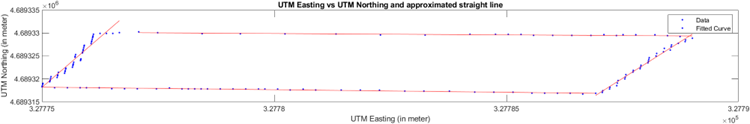
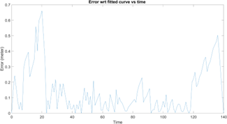
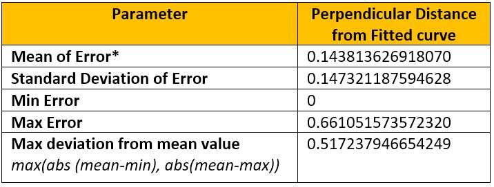
*Error is found by taking perpendicular distance from a point to the fitted curve/ line.
• Movement is done mostly in straight line to the best of our team’s capability by defining a pathway but as can be seen from the approximated curve and statistical analysis, a maximum error of ~ 66.10 cm is present. The error/ noise in non-Gaussian in nature. It is also seen that initially, the error is large but later, it subsides, remains low for some time until the quality factor fluctuates again. The standard deviation of error is ~14.73 cm. This could be attributed to the variation in GPS Fix Quality (change from RTK Fixed to RTK Float or DGPS which are less accurate) and human error in defining a straight-line path and/ or following the same.
• It is also observed that as per the utmE vs utmN plot, start and end points don’t coincide. They are apart by 45.17 cm. However, utmost care was taken, and it was ensured that physically, both start and end points should coincide. This might be due to the reason that error can drift and accumulate while moving over time. *
*Ref: https://sites.aces.edu/group/crops/precisionag/Publications/Timely%20Information/GPS-GNSS_Drift.pdf
3. STATIC DATA (PARTIAL OCCLUSION AND REFLECTION): West Village Quad
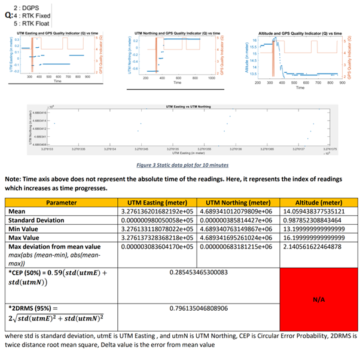
The static readings were taken near West Village quad tents under a tree in the evening with cloudy sky condition which has big buildings in the surrounding and is perfect for partial occlusion and reflection. As can be seen from the data, Q value fluctuates initially between 4 (75.81% of the time), 2 (0.78 %), and 5 (23.4%). When Q value fluctuates, a corresponding change in utmE, utmN and altitude values is seen. These are stable when Q=4. The signals may fluctuate because of multipath/ DOP since the sensor was not in an open place.
Maximum deviation from mean value for utmE, utmN and altitude is 30.83 cm, 68.31 cm, and 2.14 m. CEP and 2DRMS values are 28.54 cm and 79.61 cm respectively which show that for 2D position, centimetre level accuracy is achieved. It is also observed that utmN varies more compared to utmE. Since RTK works best when both base and rover have a clear line of sight to the sky, but as it is not the case for this data set, expectations are met.
4. MOVING DATA (PARTIAL OCCLUSION AND REFLECTION): West Village Quad
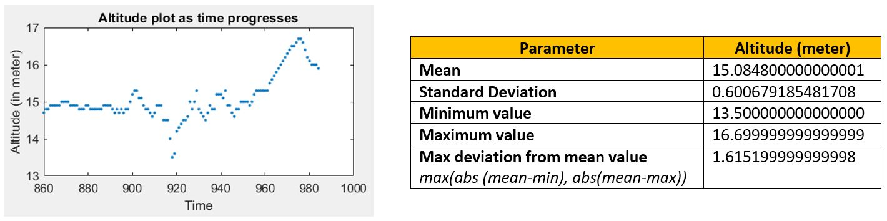
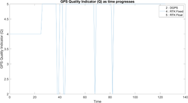
This data was taken near west Village quad tents in the evening with cloudy sky condition which has big buildings in the surrounding and is perfect for partial occlusion and reflection. Q = 4 was obtained for 20.8 % of the time, 5 (74.4 %), and 2 (4.8 %). Movement was done in a rectangle. Approximated curve is plotted below using MATLAB by breaking data into four segments (top, right, bottom, and left). A maximum deviation of 1.61 m from the mean altitude value is observed which can happen due to fluctuations in the Q value, and VDOP.
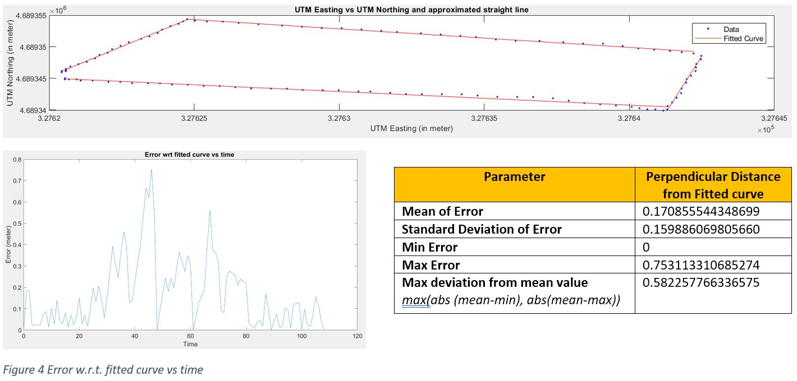
• It is also observed that as per the utmE vs utmN plot, start and end point don’t coincide. They are apart by 1.48 m. However, utmost care was taken, and it was ensured that physically, both start and end points should coincide. This might be due to the reason that error can drift and accumulate while moving over time. *
*Ref: https://sites.aces.edu/group/crops/precisionag/Publications/Timely%20Information/GPS-GNSS_Drift.pdf
• Movement is done mostly in straight line to the best of our capability but as can be seen from the approximated curve and statistical analysis, a maximum error of ~ 58 cm is present. Error/ Noise is high when the Q value changes to 2 which is expected, and it is also non-gaussian in nature. The standard deviation of error is ~15.98 cm. This can be attributed to multipath and/ or HDOP/ VDOP (due to buildings near the testing site) which affects the accuracy of the reading.
In terms of data quality/ accuracy, below trend is observed which is also expected:
Static Clear > Static Occlusion and Moving Clear > Moving Occlusion

Copyright © 2022 by "Dev Vaibhav" · All Rights reserved · E-Mail: vaibhav.dev5@gmail.com | LinkedIn | GitHub